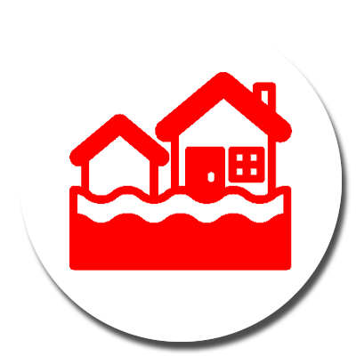
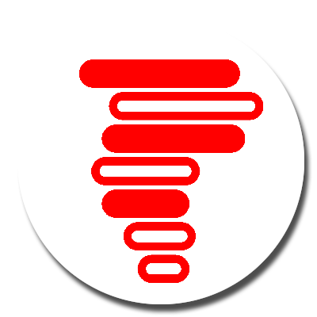
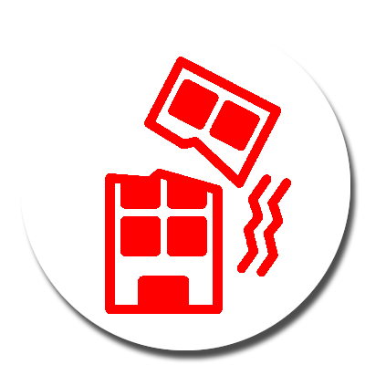

If I Am a Climate Refugee
내가 만약 기후난민이 된다면?
재난을 선택해 시뮬레이션을 시작하세요

홍수

태풍

지진
← 돌아가기
재난문자 애니메이션 삽입 예정입니다...
매년
약 2억 명
이 홍수 위험에 노출됩니다.
기후난민의
80%
는 물 문제로 발생합니다.
해수면은 매년 평균
3.4mm
씩 상승 중입니다.
도시 인프라의 붕괴는 대피를 어렵게 만듭니다.
당신은 지금, 그 한가운데에 있습니다.
아래로 스크롤하여 내용을 확인하세요
↓
다음 단계로
← 돌아가기
재난문자 애니메이션 삽입 예정2
인터랙션 너무 재미없어서 작년에 햇던 방식으로 cables.gl 쓰거나 쓰리디 인터랙션 넣을 것 같아요
초강력 태풍의 비율은 최근
30년간 2배
증가했습니다.
피해자의
70%
는 해안 저소득층입니다.
기후 재난은 평등하지 않습니다.
정책은 그들을 보호하지 못합니다.
다음 단계로
← 돌아가기
재난문자 애니메이션 삽입 예정3
여기도 인터랙션 수정 많이많이...
지반 침하와 기후로
인프라가 약해지고
있습니다.
도시가 흔들리고,
집이 무너지고
있습니다.
돌아갈 집이 없는 사람들은
기후난민
이 됩니다.
다음은 당신일 수 있습니다.